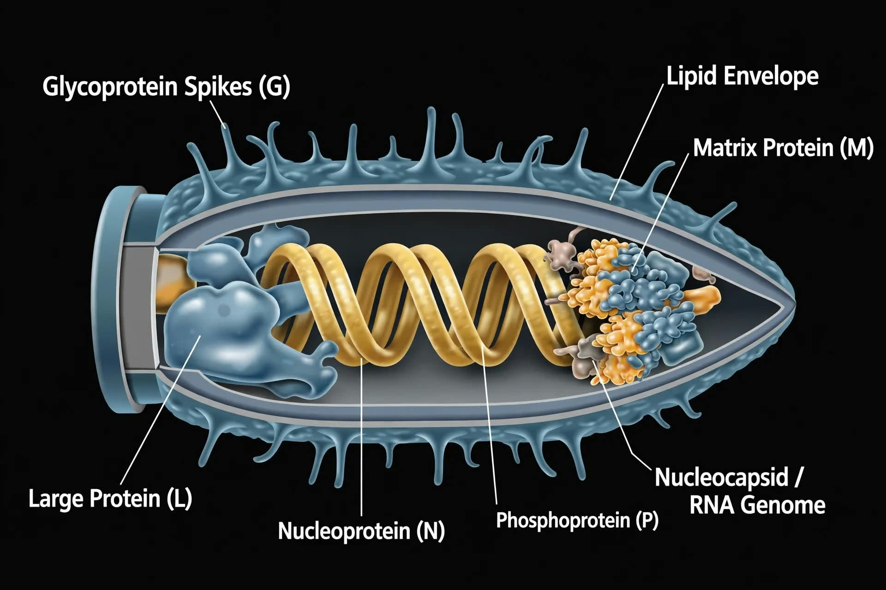
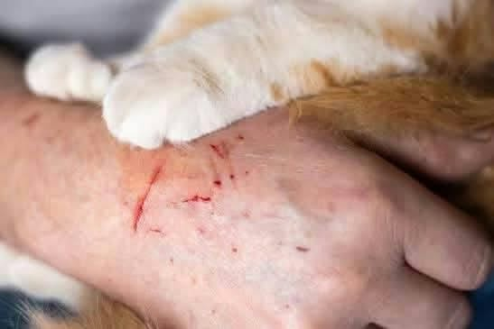
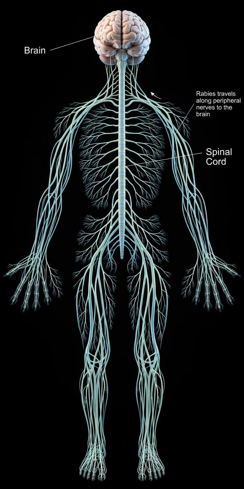
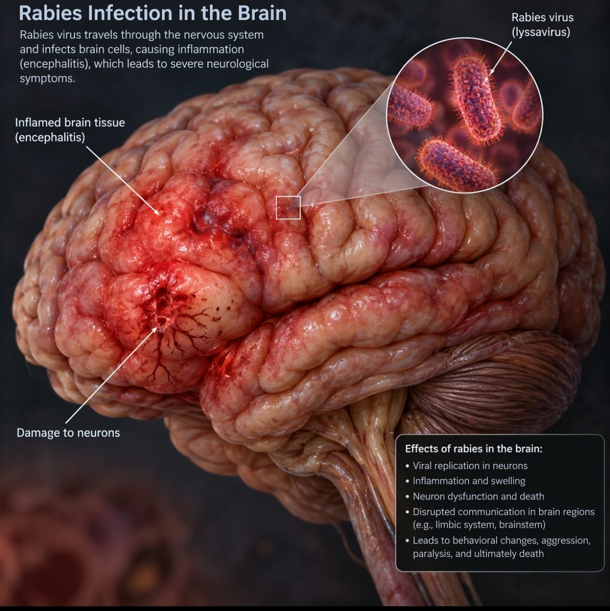
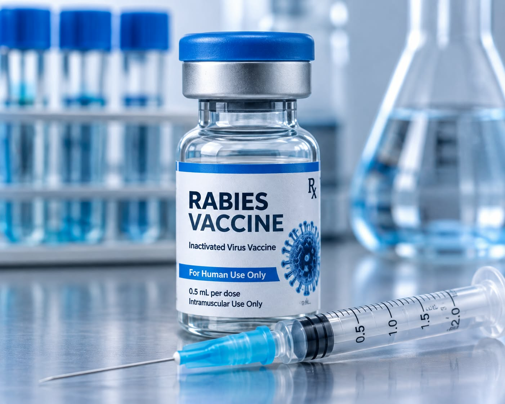

The cause
A virus that infects mammals, both domesticated and wild.

The tiny invaders, deadly killers.
Rabies has existed for at least 4,000 years, and it remains one of the deadliest viral diseases known to humanity. It is usually transmitted from animals to humans through bites or scratches contaminated with infected saliva.
The virus attacks the nervous system and brain. Many people have suffered and died from this disease, but how can we protect ourselves from it? How does rabies work? And lastly, how can we prevent ourselves from becoming infected?
This page will help you answer those questions.
Explore the ScienceRabies is caused by the virus Lyssavirus rabies. It travels from animals to people, and it targets the nervous system.
A virus that infects mammals, both domesticated and wild.
Infected saliva enters the body through a bite, a scratch, an open wound, or a mucous membrane.
The virus attacks the nervous system and brain, where it causes severe damage.
Rabies moves through the body in four stages, from the bite site to the brain.

Rabies, or Lyssavirus rabies, enters the body through a bite or scratch. A person can also become infected when saliva from a rabid animal comes into contact with an open wound or mucous membrane.
Inside the human body, the virus enters the incubation period, during which it may replicate slowly in muscle tissue near the bite site or remain localized before invading the peripheral nervous system.

Bites closer to the central nervous system, such as those on the head, neck, face, or hands, tend to have a shorter incubation period because the virus has a shorter distance to travel along the nerves to the brain.
During this stage, the virus begins traveling through the nerves toward the brain. Symptoms are usually not yet noticeable.

As rabies reaches the central nervous system and spinal cord, it causes inflammation and begins producing flu-like symptoms. These may include:
This stage is extremely dangerous. Once clinical symptoms develop, rabies is almost always fatal.

When rabies reaches the brain, it causes severe inflammation that can lead to life-threatening damage. Possible effects include:
A deadly disease can be prevented if proper treatment is received immediately after a possible exposure.
Anyone who may have been exposed to rabies must visit the nearest Animal Bite Treatment Center (ABTC) as soon as possible. Do not wait until symptoms appear.
Before going to an Animal Bite Treatment Center, immediately wash the wound with running water and soap for at least 15 minutes.
Avoid approaching unfamiliar or aggressive animals.
Have pets vaccinated against rabies.
Keep pets under responsible supervision.
Seek immediate medical attention after a possible exposure.
Follow the recommended post-exposure prophylaxis (PEP) provided by healthcare professionals.
Rabies can infect mammals, including both domesticated and wild animals. Animals that may carry and transmit the virus include dogs, cats, bats, monkeys, foxes, raccoons, and other mammals. Dogs are the most common source of human rabies transmission worldwide.
Rabies is usually transmitted through the bite of an infected animal. The virus is present in the infected animal's saliva and can enter the body when the skin is broken. Dogs are the leading source of human rabies transmission worldwide; bites and scratches from infected dogs account for approximately 99% of human rabies transmissions globally.
Animals can become infected when a rabid animal bites them. The bite allows virus-containing saliva to enter the other animal's tissues. Infection may also occur if infected saliva comes into contact with an existing open wound or a mucous membrane, such as the eyes, nose, or mouth.
We can protect our animals through proper and up-to-date rabies vaccination. Keep pets under responsible supervision and avoid allowing them to roam freely or approach unfamiliar animals.
If your pet is bitten or scratched by an animal that may have rabies, contact a veterinarian or local animal health office immediately. Do not wait for symptoms to appear, and follow the professional's instructions.
Learn more about rabies with the sources I used:
Research article
https://doi.org/10.2147/RRTM.S16013Rabies fact sheet
https://who.int/news-room/fact-sheets/detail/rabiesRabies: Symptoms, causes, and treatment
https://clevelandclinic.org/health/diseases/13848-rabies